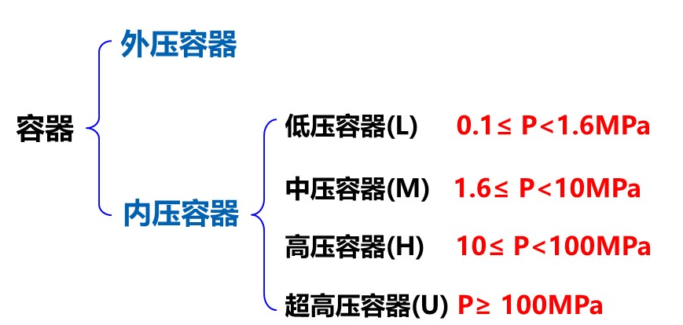

文章大纲
化工设备概述
- 设备的分类
按压力分类

按温度分类：

2．设备选材的基本要求
- 有足够的力学性能。
- 具有良好的加工性能。
- 具有良好的耐腐蚀性能。
- 经济合算。
- 其它各种性能符合设计要求。
材料的机械性能
- 强度：屈服点 抗拉强度 蠕变强度 持久强度 疲劳强度
- 塑性：延伸率 断面收缩率 冷弯性能
- 硬度：布氏硬度 洛氏硬度 维氏硬度
- 韧性：冲击韧性
强度
在外力作用下抵抗变形和断裂的能力。

屈服点 \(R _ { e L }\) ：开始出现屈服现象时相对应的应力，MPa。
在外力不再增加，仍发生明显塑性变形，这个现象称为材料达到了屈服点。
金属或合金一般很少有明显的屈服现象，而高分子材料一般具有明显的屈 服现象。
条件屈服点：发生0.2%残余伸长时的应力。
\(R _ { p0 . 2} = \dfrac { F _ { 0 . 2 } } { S _ { 0 }}\)
影响屈服点大小的因素
【内在因素】
- 结合键
- 组织结构
- 原子本性
【外在因素】
- 温度：温度升高，屈服点下降
- 应变速率：应变速率升高，屈服点升高
- 应力状态
抗拉强度 \(R _ { m }\) ：材料发生断裂时所能达到的最大应力值(抗压、抗弯、抗剪)。
屈强比 \(R _ { e L } / R _ { m }\) ：反映了材料塑性贮备的一个指标
由于一般 \(R _ { e L } < R _ { m }\) ，屈强比一般小于1。
屈强比越大，屈服点与抗拉强度愈接近，塑性储备越小，这时有可能发生脆性断裂; 这类材料如木棒。
屈强比越小，屈服点愈小于抗拉强度，这时塑性储备愈大，但材料的强度往往得不 到充分的发挥;这类材料如竹条。
因此，在工程上希望所选用的材料具有合适的屈强比。
蠕变强度 \(R_{n}^{t}\)：表征材料在高温和应力下抵抗发生缓慢塑性变形的能力。
蠕变:在一定应力下，应变随时间而增加的现象。
发生蠕变现象往往需要很长的时间，如古罗马教堂的玻璃。
蠕变强度:材料抵抗蠕变现象发生的能力。
表达蠕变强度的方法
- 达到某一蠕变速度的应力值
- 达到某一总变形的应力值
蠕变速率 \(= d \delta / { d \tau }\)

oa段：材料在温度t下承受拉应力时所产生的起始伸长率（不计入蠕变） 。
ab段：减速蠕变阶段。
bc段：恒速蠕变阶段。
cd段：加速蠕变阶段。
温度↑，蠕变强度↓
持久强度\(R _ {D} ^ { t }\)：在给定温度下，促使材料经过一定时间发生断裂的应力
- 在化工容器用钢中，设备的设计寿命一般为十万小时。
- 持久强度是一定温度和一定应力下材料抵抗断裂的能力。在相同条件下，能支持的时间越久，则该材料抵抗断裂的能力也越大。
疲劳强度 \(R _ { - 1 }\)
- 很多构件经常受到大小及方向变化的交变载荷，这种交变载荷使金属材料在应力还远低于屈服点时就发生断裂，这种现象称为“疲劳”。金属在无数次交变载荷作用下，而不致引起断裂的最大应力，称为“疲劳极限”。
- 实际上不可能进行无数次试验，一般以\(10^{6} \sim 10 ^ { 8 }\)次循环试验作为疲劳强度。
- 影响金属疲劳强度的因素主要有：合金成分、表面状态、组织结构、夹杂物的多少与分布状况、应力集中情况。
塑性
在外力作用下产生塑性变形而不被破坏的能力
延伸率A：试样受力拉断后，总伸长的长度与原始长度之比的百分率
\(A = \dfrac { L _ { u } - L _ { 0 } } { L _ { 0 } } \times 1 0 0 \% = \dfrac { \Delta L } { L _ { 0 } } \times 1 0 0 \%\)
- 延伸率愈大，材料的塑性愈好。
- 由于试样的总伸长为均匀伸长与局部缩颈伸长，故延伸率与试样尺寸有关。
断面收缩率Z：试样受力拉断后，断面缩小的面积与原始截面面积之比的百分率。
\(Z = \dfrac { S _ { 0 } - S _ { u } } { S _ { 0 } } \times 1 0 0 \% = \dfrac { \Delta S _ { u } } { S _ { 0 } } \times 1 0 0 \%\)
- 断面收缩率愈大，塑性愈好。
- 由于断面收缩率与材料尺寸无关，故它能更加可靠地反映出材料塑性的变化。
- \(A = \dfrac { Z } { 1 - Z }\) 或 \(Z = \dfrac { A } { 1 + A }\)
- 若发生缩颈，延伸率与断面收缩率之间难以确定明确的数学关系。
冷弯性能：用弯心直径等于1.5a的弯心将试样弯曲180°，不得出现裂纹、裂缝为合格。
硬度
材料抵抗其它更硬物压入表面的能力。
- 硬度不是一个单纯的物理量，而是反映材料弹性、强度、塑性和韧性等的一个综合性能指标。
- 常用的硬度测量方法都是用一定的载荷（压力）把一定的压头压入金属表面，然后测定压痕的面积或深度。当压头和压力一定时，压痕面积愈大或愈深，硬度就愈低。
- 根据压头和压力的不同，常用的硬度指标可分为布氏硬度、洛氏硬度和维氏硬度。
冲击功
冲击功是衡量材料韧性的一个指标，是材料在冲击载荷作用下吸收塑性变形功和断裂功的能力，常以标准试样的冲击功KV2表示。
- 冲击韧性 \(\alpha _ { k }\) ：表示材料在外加载荷突然袭击时及时和迅速塑性变形的能力。
- \(\alpha _ { k } =\dfrac{KV_2}{F} \quad\rm(J/cm^2)\)
材料的物理化学性能
弹性模量E：金属材料抵抗弹性变形的指标
\(E = \sigma _ { \varepsilon }\)
温度升高，弹性模量E降低。
泊松比μ：拉伸试验中试件单位横向收缩与单位纵向伸长之比
对于各种钢材它近乎为一个常数，即μ＝0.3。
耐腐蚀性能
金属材料的分类与牌号
金属的分类

其它分类方法

钢铁牌号及表示方法
牌号 种类 含碳量/% 合金元素含量/% 符号意义 Q235A.F 普通碳素结构钢 / / F：沸腾钢 Q：屈服极限 Q235A 优质碳素结构钢 / / A：钢材质量等级A级 20g 锅炉专用钢 0.2 / g：锅炉用钢 16MnR 低合金钢 0.16 小于1.5% R：容器用钢 16MnDR 低合金钢 0.16 小于1.5% D：低温用钢 00Cr19Ni10 不锈钢 “00”表示含碳量低于0.03% 铬 Cr：18.00～20.00 镍 Ni：8.00～11.00 PPT内容
牌号表示方法

钢号表示方法


铸铁、铸钢牌号表示方法

碳钢与铸铁
碳钢和铸铁都是由95％以上的铁和0.05％～4％的碳及1％左右的杂质元素组成的，因此又称为“铁碳合金”。

铁碳合金的组织结构
金属的晶体结构

金属铁的三种点阵结构

纯铁的同素异构转变

铁碳合金的基本组织
碳溶解在铁的晶格中形成固溶体
铁素体（F, Ferrite）：碳溶解在α—Fe中形成的固溶体。0.006％。
强度硬度低、韧性塑性好。
奥氏体（A, Austenite）：碳溶解在γ—Fe 中形成的固溶体。最多2.06％
强度硬度高，韧性好，塑性低，无磁性。只有在t＞727℃时，奥氏体才存在
马氏体（M, Martensite）：钢铁从高温奥氏体状态急淬下来的固溶体。
硬度高、但很脆，不稳定。
碳与铁形成化合物—渗碳体Fe3C（C）Cementite
- 又脆又硬，熔点高。当碳含量大于2％时，部分碳以游离的形式存在于铁碳合金中，即为铸铁。
- 渗碳体在一定条件下可分解成铁与碳，但这种游离的碳是以石墨的形式存在的，对强度影响极大。
碳与铁形成混合物
- 珠光体（P）Pearlite：铁素体（88％）和渗碳体（12％）组成，平均含碳量为0.77％。性能介于铁素体与渗碳体之间。
- 莱氏体（L）Ledeburite：珠光体与初次渗碳体组成。是一种较粗而硬的组织。

铁碳合金状态图

碳含量对碳钢机械性能的影响

杂质元素对碳钢性能的影响
对碳钢性能有利的元素：
- 锰（Mn）：弱氧化剂，有脱氧和减轻硫的有害作用；
- 硅（Si）：有利于脱氧；
- 绝大多数金属元素：如钛、铬、镍等。
对碳钢性能有害的元素：
- 硫（S）：热脆性；
- 磷（P）：冷脆性；
- 氧（O）：降低钢的机械性能；
- 氮（N）：时效现象，使钢的硬度、强度提高；塑性降低；
- 氢（H）：氢腐蚀。
特种钢、有色金属、非金属材料
低合金钢具有更优良的物理、化学性能
低合金钢中添加的元素及其作用：

低合金钢牌号

化工设备腐蚀与防腐
评定金属的腐蚀
\(K _ { a } = \dfrac { 2 4 \times 3 6 5 K } { 1 0 0 0 \rho } = 8 . 7 6 \dfrac { K } { \rho }\)
\(K _ { a }\) - 每年金属厚度的减小量，\(\rm mm/a\);
\(ρ\) - 金属的相对密度，\(\rm{g/ c m ^ { 3 } }\)。
耐腐蚀性能 腐蚀速度/(mm/a) 耐腐蚀级别 耐蚀 <0.1 1 可用 0.1~1.0 2 不可用 >1.0 3 常见腐蚀类型
- 化学腐蚀：金属高温氧化及脱碳、氢腐蚀。
- 电化学腐蚀：晶间腐蚀（与Cr含量有关）、应力腐蚀（腐蚀介质+拉应力的共同作用）
金属设备的防腐措施：衬覆保护层、电化学保护、添加缓蚀剂
化工设备选材的原则
略


发表您的看法